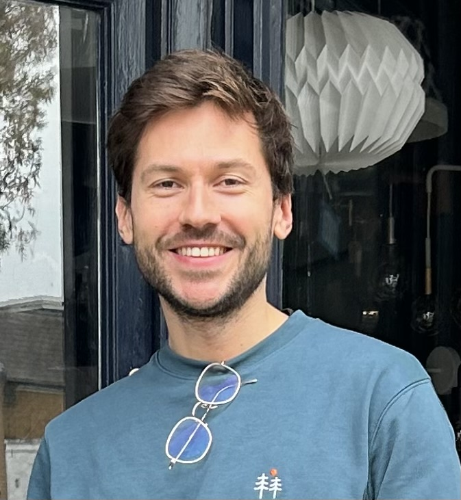

Pierre Allain
Machine learning, language, building things.
I'm an applied scientist based in London, working mainly on NLP, language models, and large-scale text systems. Over the past eight years, I've built machine learning systems in finance and payments, with a particular interest in turning messy information into useful tools. I like work that sits somewhere between research and engineering and ends up being genuinely useful. Outside work, I spend a lot of time running and boxing, read quite a bit, and play guitar badly but happily.